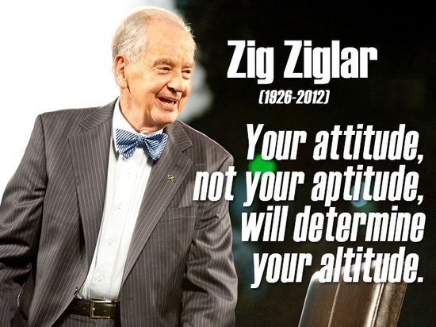

Characteristics That Attract
Every person should seek to become the best they can be.
One fairly obvious trait that is attractive is confidence. We people love to see confidence; so much so that we seek to follow it. Why is that do you suppose? What does the image of confidence exude? Confidence seems to be an indicator of strength, knowledge, direction, purpose, and a plan. Strength because to lack confidence is a perceived weakness. Knowledge because it’s perceived as operating within full understanding of moving forward. Direction because confidence displays action of moving forward and not being lost. Purpose because that is the perceived root strength of confidence. And a plan, because taking all the previous factors into consideration it makes sense that it all flows into a plan.
That’s a lot to be perceived from the air of confidence. But each thing perceived isn’t necessarily what is. Nonetheless confidence is a trait we should all display in our lives as we are able. And where should we get that confidence? The truth, in love, revealed.
Another thing that is an attractive characteristic is transparency. When a person shares more of themselves it’s raises the level of trust. I’ve seen more people pursue and achieve their dreams when they are sure to be honest with themselves first, and those around them. But this quality isn’t enough on it’s own. For one could be vulgar and have this quality. No this is best when a person shows love towards others by highly esteeming others, being courteous, and gracious.
Yes, the most attractive trait is love. Let’s look at the aspects of love that are attractive.
Love is patient and is kind;
Love doesn’t envy.
Love doesn’t brag,
Is not proud,
Doesn’t behave itself inappropriately,
Doesn’t seek its own way,
Is not provoked,
Takes no account of evil;
Doesn’t rejoice in unrighteousness, but rejoices with the truth;
Bears all things, believes all things, hopes all things, endures all things.
– 1 Corinthians 13:4-7
Yes these are attractive attributes. So how can we apply them to our own lives? For we are not yet perfect, how might we change so?
Discipline: What enters your mind when you hear that? If you think punishment then you don’t understand what discipline is. Those who love their children discipline them. Those who love themselves practice self discipline. When I say loving self I’m not referring to an egotistical way towards one’s self. I simply mean the value we place within our very existence as far as it extends in memory, in our current person, and every hope we have moving forward. These things are intrinsically tied to our love for self and that’s not bad. Although it could be taken too far. But let’s get back to discipline. Discipline is an act of love that guides to a better, safer, and wiser future. That is the purpose of discipline. Self discipline is the practice of drawing ourselves towards perfection.
Discipline also applies to personal characteristics. You are who you are, but you could also be just as different. What do I mean by that? Well lets say you’re right handed. But from today onward you will use your left hand. Think about it. This would be extremely difficult to do as your habits predetermine which hand you use, but if you choose you can use your will to override the decision of habit. And then you will be a true left handed person. Because that’s the only hand you use. This can be done with any characteristic we wish to have as part of who we are. “Anything worth doing is worth doing poorly until you learn to do it well.” – Zig Ziglar
The biggest enemy to creating good characteristics within yourself is fear. I’m not referring to a healthy fear such as not sticking knives into toasters. No I’m speaking of our common nature to fear both the unknown and change. This kind of fear blinds and constrains. Fear is often a self fulfilling prophecy. You often bring about what you believe of yourself. So don’t give in to fear. See it for the lie that it is. This is the life you’ve been given. If you don’t make of it what you will, no one will.
I believe Ravi Zacharias explains the paradigm of who we are best:
“The dialectic of life.” … “You are who you are not because of what you do. But the fact of the matter is you do what you do because of who you are. And sometimes the doing helps you become at the same time.
Let me give you a simple example on that, very often we say ‘when it’s hard to pray, that is the time for you to pray the hardest’. What do we mean by that? What we’re really saying is look ‘don’t wait for the feeling to come on before you pray. But discipline your life. And the more you discipline it that feeling converges in your life’. You do the same thing in romance and love with your partners. You don’t always have to feel like pulling the chair for them or opening the door for them. You just do it. And in the process of that doing you are also becoming and it affects your being.
And I think Jesus does this very often. He tells us to use our wills. Seek first the kingdom of the Lord and His righteousness. You shall search for Me and find Me when you shall search for Me with all of your heart. If any man will come after Me let him deny himself take up his cross and follow Me. As a man thinketh in his heart so he is. Out of the heart are the issues of life. So you see He brings in both of these facets. That by will you express your choices, but the heart is really the seat and the fountain of those choices that you make.”
– Ravi Zacharias / Leadership Seminar Workshop 1986
So the ideal life is one with much self discipline. It may help you to write down all the traits you wish to describe you. And what action steps to take to start on each area. Action steps are important. Without them it’s just a vague aspiration. Self discipline also can be very enjoyable. It’s your choice on how you perceive it. So why not enjoy it?
Please comment, share, subscribe to my RSS Feed,and follow me on twitter @6ftdan!
God Bless!
-Daniel P. Clark